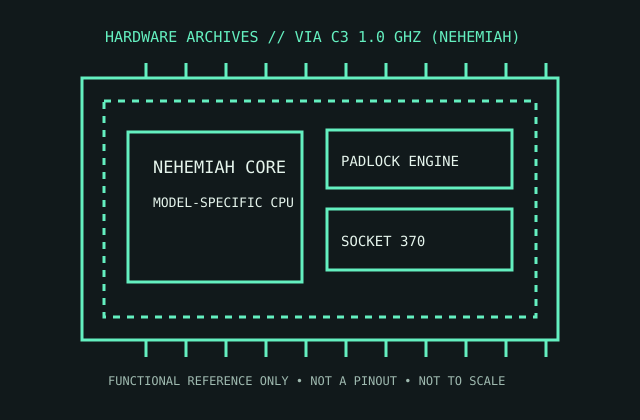

[ EMBEDDED PROCESSORS // IDENTIFIED PROCESSOR ]
VIA C3 1.0 GHz (Nehemiah)
This 1 GHz VIA C3 Nehemiah part is a compact Socket 370 x86 processor that introduced PadLock hardware security features to the C3 family.

MODEL IDENTIFICATION: VIA C3 1.0 GHz (Nehemiah). Compare the printed part number, speed grade, package, cache configuration, and stepping with the cited documentation; do not transfer one variant’s limits to another.
Recorded specifications
| Cataloged part | VIA C3 1.0 GHz (Nehemiah) |
|---|---|
| Era / family | VIA C3 / Nehemiah C5P, 2003; 1.0 GHz Socket 370 part. |
| Key specifications | 1.0 GHz; 133 MHz front-side bus; 64 KB instruction + 64 KB data L1; 64 KB L2; 0.13 μm; Socket 370; C5P core includes PadLock RNG/AES features on supported revisions. |
| Interface / fit | Requires Socket 370 motherboard support for the C5P core and 133 MHz FSB, plus compatible BIOS. Socket 370 board VRM and BIOS support varies across C3/Celeron processors. |
| Variant distinction | This record describes the 1.0 GHz Nehemiah C5P revision; earlier Samuel/Ezra C3 revisions have different microarchitecture, clock behavior, and feature set. Verify the CPU marking and C5P family. |
Compatibility and variants
- Requires Socket 370 motherboard support for the C5P core and 133 MHz FSB, plus compatible BIOS. Socket 370 board VRM and BIOS support varies across C3/Celeron processors.
- This record describes the 1.0 GHz Nehemiah C5P revision; earlier Samuel/Ezra C3 revisions have different microarchitecture, clock behavior, and feature set. Verify the CPU marking and C5P family.
- Confirm the system manufacturer’s exact processor support list, firmware minimum, board revision, power/thermal envelope, and memory requirements before installation.
Service and archival notes
Keep the exact board and BIOS pairing in the record. Document whether the test host exposes PadLock; do not assume application use merely from a C3 badge. Inspect PGA pins and the board voltage regulator.
Preserve provenance and a record of the exact marking, condition, tested board/platform, firmware, cooling, memory configuration, and test conditions. Separate published specification limits from observations made on a particular surviving system.
Sources & further reading
- VIA C3 Nehemiah processor datasheet — manufacturer technical referenceSpecific model or manufacturer-family reference; verify revision and configuration against the device marking and platform documentation.
- VIA C3 1.0 GHz Nehemiah model identification/specification cross-referenceSpecific model or manufacturer-family reference; verify revision and configuration against the device marking and platform documentation.
- VIA PadLock security engine — VIA product/technology backgroundSpecific model or manufacturer-family reference; verify revision and configuration against the device marking and platform documentation.
Third-party reference pages and document archives are finding aids. The matching manufacturer datasheet, product specification, and board support documentation take precedence for the exact revision and host.